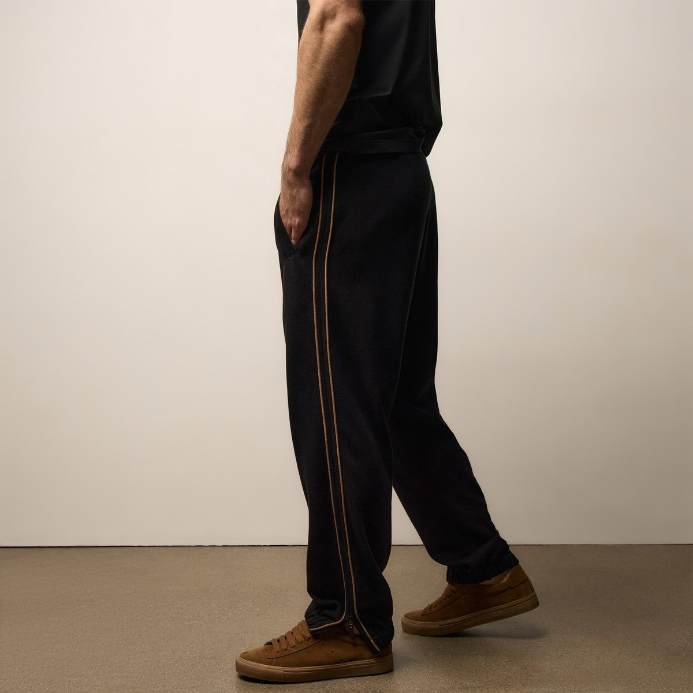

01Track set · the heroJames Perse
Brushed Cotton Suede Piped Track Set
~$275 / piece · pant + jacket as a set
Fabric & constructionBrushed cotton “suede” jersey — a napped finish engineered to feel like suede in the hand — with contrast whiskey piping down a relaxed, drapey leg. Made in the USA. Lightweight-to-mid; this is drape, not bulk.
Why this one for Jay: It’s the exact pant you linked — so we start by buying the thing you already wanted, then build a rotation around it. The suede-hand jersey is a texture-person’s sweatpant, which is precisely your background: you sold a company built on taste and material. Worn as a set it becomes the “intentional” look that reads beautifully on a podcast — monochrome, piped, quietly expensive without a single logo. (One care note from the field: wash cold, lay flat — the suede finish rewards a gentle hand.)
Suede-jersey handRelaxed drapeMade in USASet-ready
View at James Perse →